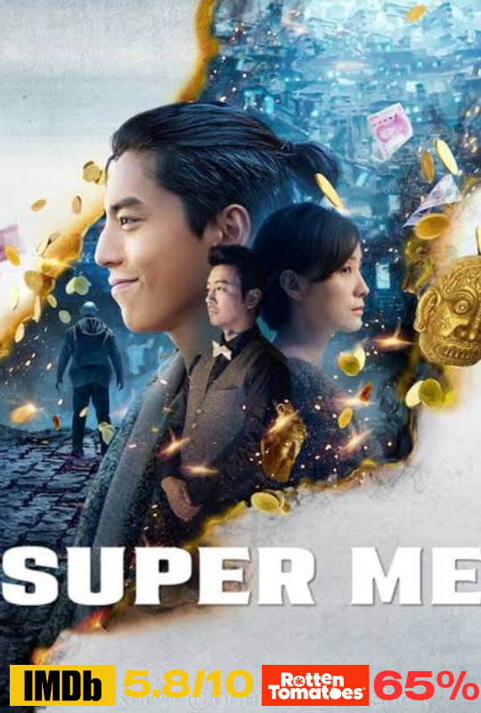
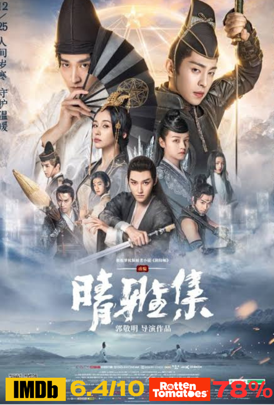
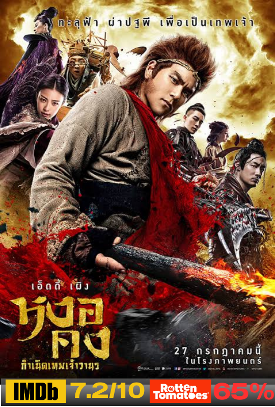
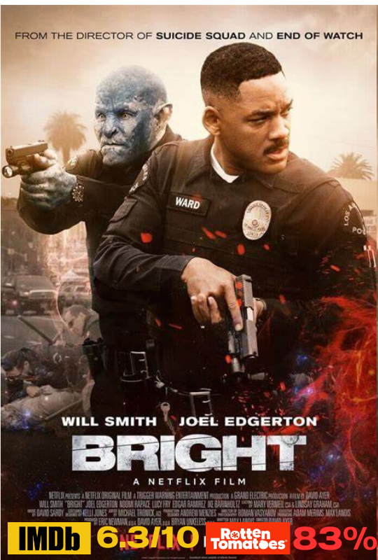
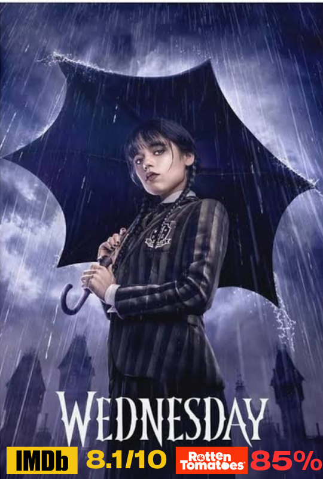
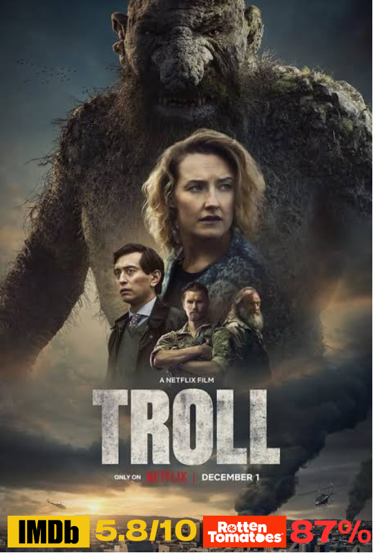

คะแนนรีวิวจากเว็บไซต์ IMDB 5.8/10
คะแนนรีวิวจากเว็บไซต์ Rotten Tomatoes 65%
เรื่องย่อ เป็นเรื่องราวของเบนนี่ นักศึกษาหนุ่มที่มีชีวิตธรรมดาๆ แต่ปรากฏว่าเขาได้มีโอกาสเป็นโชเฟอร์ขับรถรับจ้างชั่วคราวแทนพี่ชายของเขา ปรากฏว่าผู้โดยสารที่เขาต้องให้บริการนั้น
เป็นหญิงสาว 2 คน กับบุคลิกที่ลึกลับที่ออร่าของพวกเธอเปล่งประกายในยามดึกสงัด เขาต้องตระเวนขับรถไปทั่วนครลอสแองเจลิสตามคำสั่งตลอดทั้งคืนและได้นำพาเข้าไปสู่วังวนในโลกใบที่แสนอันตราย
ที่เขาไม่ควรจะนำชีวิตตัวเองเข้าไปข้องเกี่ยวด้วยเลย การต่อสู้เพื่อเอาชีวิตรอดจนกว่ายามเช้าที่พระอาทิตย์ขึ้นจะมาถึงจึงเริ่มขึ้น

คะแนนรีวิวจากเว็บไซต์ IMDB 5.8/10
คะแนนรีวิวจากเว็บไซต์ Rotten Tomatoes 65%
เรื่องย่อ เป็นเรื่องราวของ ซางหยู นักเขียนไส้แห้ เขาพยายามฝืนตัวเองให้ตื่นตลอดเวลา เพราะถ้าเมื่อไร่ที่เขานอนหลับ เขาจะฝันว่ามีปีศาจตามล่าและฆ่าเขา
จนวันหนึ่งเขาค้นพบว่าเขาสามารถนำสมบัติวัตถุโบราณในความฝันออกมาในโลกความจริงได้ เพียงชั่วข้ามคืนทำให้กลายเป็นเศรษฐี และใช้ชีวิตอย่างมั่งคั่ง
แต่ไม่มีโชคใดได้มาเปล่า ๆ มันแลกมาด้วยบาดแผลในร่างกาย หนำซ้ำความร่ำรวยทำให้เขาต้องเข้าไปเกี่ยวข้องกับพวกอันธพาน
3.The Yin-Yang Master (2021)

คะแนนรีวิวจากเว็บไซต์ IMDB 6.4/10
คะแนนรีวิวจากเว็บไซต์ Rotten Tomatoes 78%
เรื่องย่อ เขตใต้ เกาะตะวันตก แดนตะวันออก และนครเหนือ ทั้งสี่สำนักต่างร่วมมือกันผนึกร่างปีศาจอสรพิษเอาไว้ในนครหลวง และสร้างรูปปั้นมังกรฟ้า หงส์ไฟ เสือขาว
และเต่าดำเพื่อป้องกันเอาไว้เมื่อใดที่เงาของปีศาจอสรพิษปรากฏขึ้นมาอีกครา ทั้งสี่สำนักจักต้องส่งปรมาจารย์ที่เก่งกาจไปเพื่อสยบมันลง 300 ปีต่อมา ฉิงหมิง
ได้รับการอบรมสั่งสอนจากท่านอาจารย์มาโดยตลอดในวัยเด็กของเขามีเพียงอาจารย์เท่านั้นที่คอยเคียงข้าง แต่ด้วยเหตุบางประการจึงทำให้เขาสูญเสียอาจารย์ผู้เป็นดั่งครอบครัวไปอย่างไม่มีวันหวนคืน ฉิงหมิง
ได้รับสืบทอดตำแหน่งปรมาจารย์หยินหยางเป็นรุ่นต่อไปและต้องออกเดินทางไปยังนครหลวง เพื่อสยบปีศาจอสรพิษลงอีกครั้ง ที่นี่เขาได้พบกับ ป๋อหย่า ปรมาจารย์หนุ่มผู้มุ่งมั่นจะกำจัดปีศาจทุกตนให้สิ้นซาก
ทั้งสองต้องร่วมมือกันค้นหาความจริงเบื้องหลังการปลุกปีศาจอสรพิษให้ตื่นขึ้นและสยบปีศาจตนนี้ลงเสีย

คะแนนรีวิวจากเว็บไซต์ IMDB 7.2/10
คะแนนรีวิวจากเว็บไซต์ Rotten Tomatoes 65%
เรื่องย่อ เรื่องราวของ หงอคง ราชาวานรผู้มีถิ่นกำหนิดในหุบเขาฮั้วกั้วะ ถูกฮั้วจีซึ่งเป็นแม่ทัพสวรรค์หมายปองชีวิต แต่เขาได้รับการช่วยเหลือจากพระโพธิ์สัตว์และได้กลายเป็นศิษย์ของเขา
ในขณะเดียวกันหยางเจียนได้รับมอบหมายหน้าที่จากเบื้องบนให้สังหารจื่อเซี่ย ผู้ที่เป็นทั้งลูกสาวของฮั้วจีและบุคคลที่เขาหลงรัก เพื่อแลกกับตำแหน่งในสรวงสวรรค์ และเทียนเผิง องค์รักษ์ของฮั้วจี
ได้รับบัญชาการให้สืบหาข้อมูลของหงอคง ชะตากรรมทำให้ทั้งสามคนมาพานพบกันที่สำนักเทียนจิ และการพบครั้งนี้จะทำให้ชีวิตของทั้งสามคนเปลี่ยนไปโดยสิ้นเชิง

คะแนนรีวิวจากเว็บไซต์ IMDB 6.3/10
คะแนนรีวิวจากเว็บไซต์ Rotten Tomatoes 83%
เรื่องย่อ Bright เป็นเหตุการณ์ที่ได้นำเข้าไปสู่โลกในอนาคตที่เต็มไปด้วยความเสื่อมโทรม การอยู่ร่วมกันระหว่างมนุษย์และเหล่าสิ่งมีชีวิตพิศวงในโลกเทพนิยายทำให้เกิดบรรทัดฐานต่อกัน
นับตั้งแต่จุดเริ่มต้นของกาลเวลา โดยในเรื่องนี้จะติดตามเรื่องราวของ 2 นายตำรวจที่มีพื้นฐานแตกต่างกัน "วอร์ด" มนุษย์ตำรวจแห่งลอสแอนเจลิส (วิลล์ สมิธ) และ "นิโคลัส จาโคบี้"
นายตำรวจออร์ค (โจเอล เอ็ดเกอร์ตัน) ที่ต้องมาออกลาดตระเวนยามค่ำคืนร่วมกัน ซึ่งมันจะเปลี่ยนโลกในอนาคตของพวกเขาจากที่พวกเขาเคยรู้จักมาก่อน ด้วยทักษะการต่อสู้ที่มีเอกลักษณ์ส่วนตัว
และรูปแบบการโจมตีศัตรูที่แตกต่างกันของทั้งคู่ พวกเขาจะต้องมาร่วมมือกันช่วยปกป้องเทพธิดาตัวน้อยและโบราณวัตถุล้ำค่า ที่หากตกไปอยู่ในมือคนชั่วแล้วมันอาจทำลายล้างทุกสิ่งอย่างจนไม่เหลือชิ้นดี

คะแนนรีวิวจากเว็บไซต์ IMDB 8.1/10
คะแนนรีวิวจากเว็บไซต์ Rotten Tomatoes 85%
เรื่องย่อ เรื่องราวของ เวนส์เดย์ เด็กสาวที่เป็นเหมือนขบถสังคมในสายตาของใครหลายคน แต่กลับเฉิดฉายได้อย่างโดดเดี่ยว
แต่แล้วพ่อแม่ของเธอก็ได้ส่งเธอเข้าสู่โรงเรียนเนเวอร์มอร์ แสนแปลกประหลาด โรงเรียนที่จะนำพา เวนส์เดย์ไปพบพากับเรื่องราวเหตุการณ์ฆาตกรรมทั้งในเมือง
โรงเรียนที่เธอจะต้องไขปริศนาที่พ่อแม่ของเธอเข้าไปพัวพันเมื่อ 25 ปีก่อน
7.The Secrets of Dumbledore (2022)
คะแนนรีวิวจากเว็บไซต์ IMDB 6.2/10
คะแนนรีวิวจากเว็บไซต์ Rotten Tomatoes 46%
เรื่องย่อ เป็นเรื่องราวของศาสตราจารย์ อัลบัส ดับเบิ้ลดอร์ ได้รู้ถึงการเคลื่อนไหวเพื่อควบคุมและครอบครองโลกเวทมนตร์ของพ่อมดมืดผู้ทรงพลัง
เกลเลิร์ต กรินเดลวัลด์ ไม่มีทางเลยที่จะสามารถหยุดเพื่อนรักได้ด้วยตัวคนเดียวเขาจึงไว้ใจมอบหมายให้ลูกศิษย์คนโปรดสัตวเวทมนตร์วิทยา อย่าง นิวต์ สคาร์มันดอร์
ให้เป็นผู้นำเหล่าพ่อมดแม่มดผู้กล้าหาญและมักเกิ้ลนักอบขนมปังที่แสนกล้าหาญอีกคนไปสู้ภารกิจที่แสนอันตรายที่นั่นเพราะเขาต้องปะทะกับสัตว์วิเศษทั้งเก่าและใหม่รวมถึงกองทัพพูดตามของเกลเลิร์ต
กรินเดลวัลด์ และเดิมพันครั้งนี้สูงขึ้นทุกขณะดับเบิ้ลดอร์จะคอยมองอยู่ข้างสนามได้นานแค่ไหนและเขาสามารถดึงตัวเพื่อนรักของเขากลับมาได้หรือไม่

คะแนนรีวิวจากเว็บไซต์ IMDB 5.8/10
คะแนนรีวิวจากเว็บไซต์ Rotten Tomatoes 87%
เรื่องย่อ บอกเล่าเรื่องราวของสัตว์ประหลาดในเทพนิยายตำนานของนอร์เวย์ ที่การระเบิดภูเขาเพื่อสร้างอุโมงค์ เป็นการรบกวนธรรมชาติจนปลุกโทรลล์ให้มีชีวิตอีกครั้ง
พื่อปกป้องผู้คนจากภัยอันตรายที่จะเกิดจากสิ่งมีชีวิตไซส์ยักษ์ตัวนี้ นักบรรพชีวินวิทยา (Paleontology) นอร่า ทีเดอร์มันน์ ได้รับมอบหมายให้ค้นหาวิธีจัดการกับมัน
เธอจะสามารถสยบโทรลล์ได้หรือไม่
เรื่องย่อ หลังการสูญเสียครอบครัวครั้งใหญ่ทำให้ “วิน” ชายหนุ่มผู้รอดชีวิตกลับต้องเปลี่ยนความเชื่อและศรัทธาที่มีต่อสิ่งเหนือธรรมชาติ
โดยมุ่งเข้าสู่ศาสตร์ลึกลับและอาคมเวทต่างๆ เพื่อสืบหาและจัดการฆาตกรด้วยตนเอง แต่ยิ่งสืบหามากเท่าใด เขาก็ยิ่งถลำลึกสู่ด้านมืดมากขึ้นทุกที
จนทำให้ต้องเข้าไปพัวพันกับ “จอมขมังเวทในตำนาน”, “ผู้คลั่งพลังทำลายล้าง” และ “เจ้าลัทธิใหม่แห่งยุค” ซึ่งล้วนแล้วแต่มีความเกี่ยวข้องกับการฆาตกรรมด้วยกันทั้งสิ้น
การปะทะอันดุเดือดของ “เหล่าจอมขมังเวท” ที่มีศรัทธาแห่งตัวตนเป็นเดิมพันและอาคมปาฏิหาริย์เป็นตัวชี้ชะตา กำลังปะทุถึงขีดสุด
10.The School for Good and Evil (2022)
คะแนนรีวิวจากเว็บไซต์ IMDB 5.9/10
คะแนนรีวิวจากเว็บไซต์ Rotten Tomatoes 66%
เรื่องย่อ เป็นเรื่องเกี่ยวกับโรงเรียนเวทมนตร์แห่งความดีและความชั่วที่ก่อตั้งโดยสองพี่น้อง พี่เป็นฝ่ายดี น้องเป็นฝ่ายชั่ว เพื่อรักษาความสมดุลในโลกเทพนิยาย
ที่จำเป็นจะต้องมีฝ่ายดีและฝ่ายชั่ว เนื้อเรื่องเน้นไปที่ตัวละครเด็กผู้หญิงสองคนในเมืองกัลวาดอน คือ โซฟี และ อกาธา สองเพื่อนรักที่มีความแตกต่างกันอย่างสุดขั้ว
โซฟี เป็นคนสวย มีความฝันอยากเป็นเจ้าหญิงในเทพนิยาย ส่วนอกาธา ถูกชาวบ้านกล่าวหาว่าเป็นแม่มด โซฟีและอกาธาคอยช่วยเหลือปกป้องกันและกันเสมอ วันหนึ่ง
โซฟีได้อธิษฐานให้ตนเองได้รับเลือกไปโรงเรียนเวทมนตร์ โซฟีปรารถนาอยากได้โรงเรียนแห่งความดี แต่กลับกลายเป็นว่าโซฟีได้เข้าโรงเรียนแห่งความชั่ว
ส่วนอกาธาที่ไม่ได้มีความปรารถนาที่จะมาเรียนโรงเรียนเวทมนตร์ กลับได้คัดเลือกเข้าโรงเรียนแห่งความดีดังนั้น จากเพื่อนรักจึงกลายมาเป็นศัตรูกัน เรื่องราวผจญภัยทั้งหมดจึงเริ่มต้นขึ้น
เมื่อทั้งสองคนได้เข้าไปอยู่ในโรงเรียนแห่งความดีและความชั่ว และแถมยังต้องเผชิญกับตำนานและคำสาปร้ายของ ราฟาล (Kit Young)
บุรุษลึกลับที่เกี่ยวพันกับตำนานการสร้างโรงเรียนนี้ขึ้นอีกต่างหาก